As far as possible, CASCADE aims at providing informative feedback to the authors. For this purpose, (1) its review guidelines encourage constructive comments and inclusive evaluations, (2) its review form is structured in order to decorrelate the more objective (e.g., technical correctness) parts of the reviews from the more subjective (e.g., scientific quality) ones, and (3) its recommendation scale is connected to the type of (objective or subjective) issues identified by the reviewers, in order to make their interpretation easy.
REVIEW GUIDELINES
Reviewers of CASCADE are asked to:
- Write reviews that they would like to receive as authors and remember that reviews can fall in the hands of a first-year PhD student.
- Be concrete in the parts of the reviews related to technical and editorial issues.
- Be respectful and inclusive in the parts of the review related to scientific quality: CASCADE covers all theoretical and practical research on cryptographic implementations and embedded security; it values both experimental studies and formal analyses.
- Pose explicit questions whenever in doubt, so that they can be clarified during rebuttal.
Besides these general guidelines, the selection process of CASCADE aims at operating from the top (i.e., primarily selecting the papers that raise enthusiasm among PC members) rather than from the bottom (i.e., primarily rejecting papers that lack support).
REVIEW FORM
- Paper summary. Give a succinct and positive description of the paper's main contributions
- Suitability Does the paper belong to the conference?
- Yes
- No
- Novelty, methodology and technical correctness
- Does the paper ignore related works that overlap with the claimed results?
- Is the methodology used in order to answer the research question and to demonstrate improvements over previously published state-of-the art solutions appropriate?
- Are there technical flaws that affect the correctness of the claims?
- Editorial quality and technical details
- Is the editorial quality of the paper sufficient to understand the contribution?
- Are there technical details missing to verify the contribution?
- Scientific quality (In case answers to questions Q1 to Q5 are sufficiently positive)
- How do you rate the scientific importance of the research question?
- How do you rate the scientific contribution to this research question?
- If negative, try making suggestion on how to improve scientific quality.
- Questions List technical/editorial questions that could help you to better understand the contribution.
- Confidence level
- Weak: an educated guess
- Medium: quite confident but I could not check some of the details
- Good: I know the area and I studied the paper in sufficient detail
- Recommendation
- Strong reject (novelty, methodology or correctness issues)
- Weak reject (editorial quality requires improvement or technical details are missing)
- Borderline (the research question is deemed of limited interest or the result is deemed incremental by the reviewer)
- Accept (the paper makes a useful contribution on a relevant research question)
- Strong accept (excellent paper which significantly advances the state of the art)
- Comments to the PC This part will always remain hidden to the authors.
INTERPRETATION OF THE RECOMMENDATIONS
- Strong reject recommendations indicate fundamental errors so that the submission should not be re-submitted without substantial corrections and revisions.
- Weak reject recommendations indicate that the submission lacks a minimum level of editorial quality or technical details so that the reviewers could not be convinced by the result. Hence, a re-submission clarifying these aspect may lead to a different outcome.
- Borderline recommendations indicate a (subjective) lack of interest of the PC members who reviewed the paper. In case it is a first submission, re-submitting to a different PC may be worth trying; if the paper has already been submitted multiple times, it is advisable to try a less competitive venue.
- Accept and strong accept recommendations indicate that the paper could appear in the conference. If it did not with a majority of accept recommendations, it is most likely due to a limited number of slots, so re-submission addressing the reviews is encouraged.
Gold Sponsors
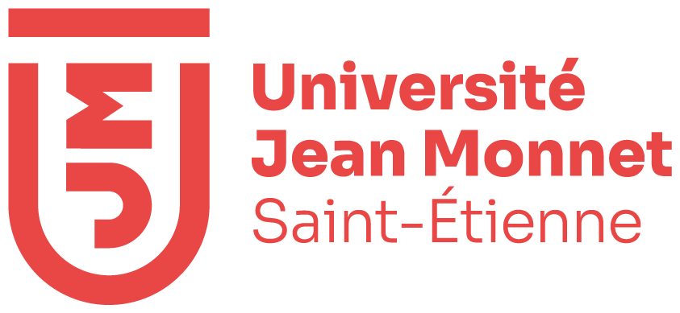Exhibitors
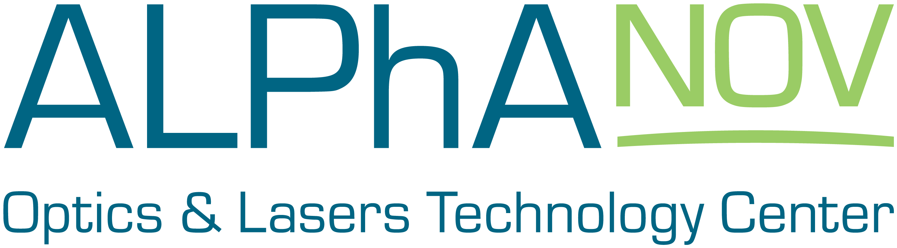 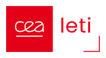 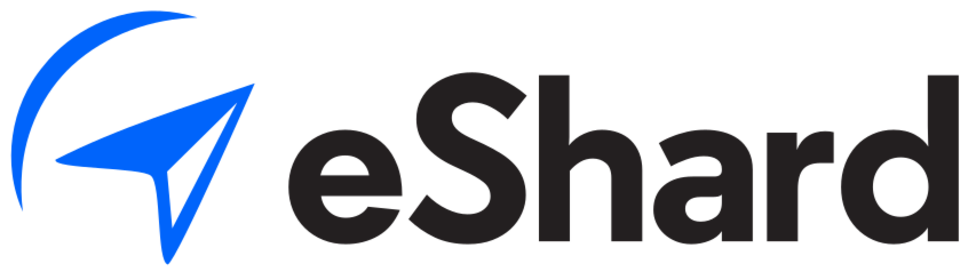Silver Sponsors
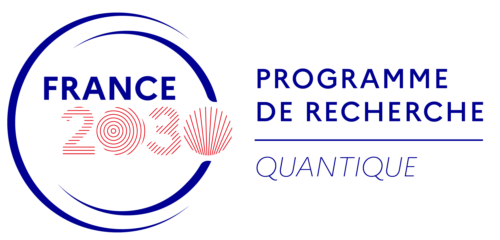 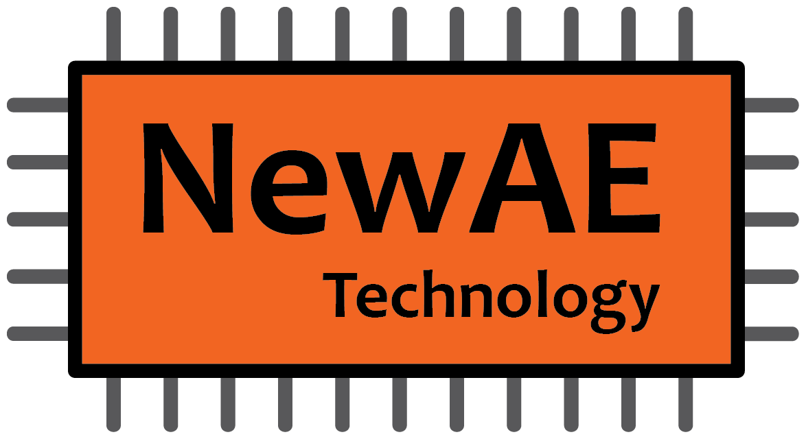 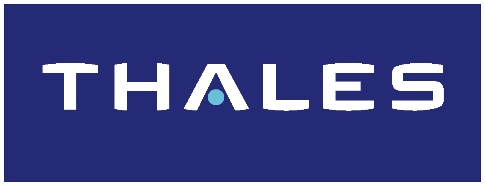 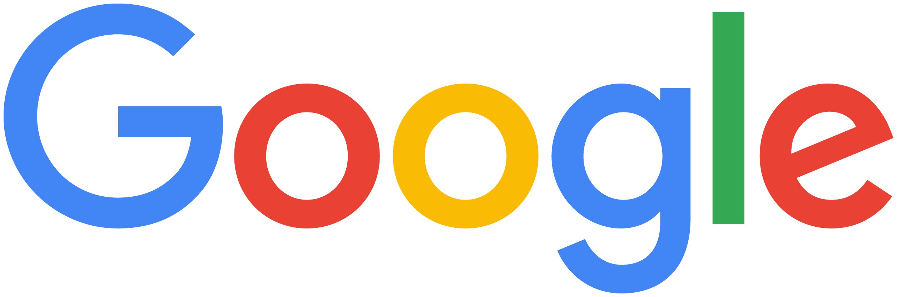
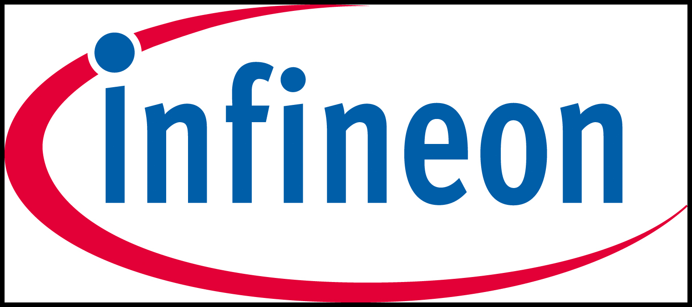
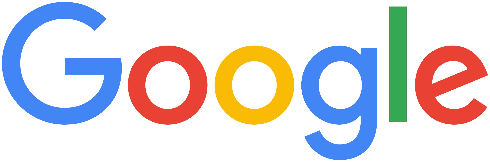
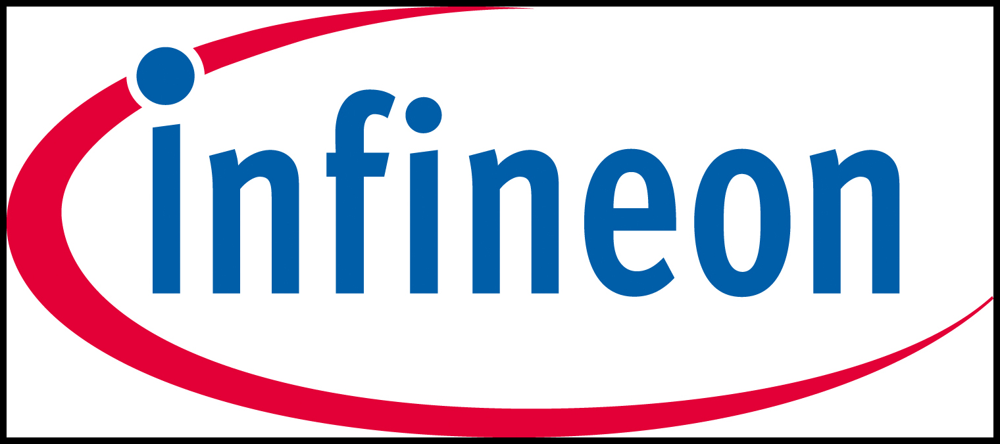